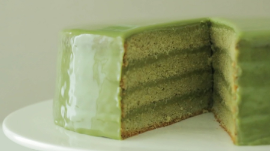
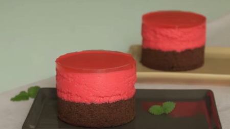

Торт с зеленым чаем
Я приготовила тортик с зеленым чаем, с зеленым бисквитом и ароматным молочным
джемом из зеленого чая!
Вкус зеленого чая действительно хорош, он сладкий и такой вкусный!

Шоколадно-ягодный торт
Муссовый торт со сливочным сыром (шоколадный чизкейк) с ярко-розовыми и шоколадными
слоями.
Я хотел создать идеальное сочетание ягодного мусса и шоколадного чизкейка!